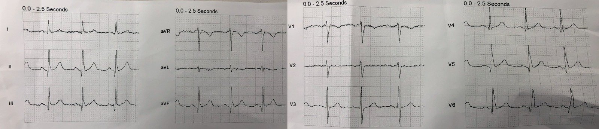
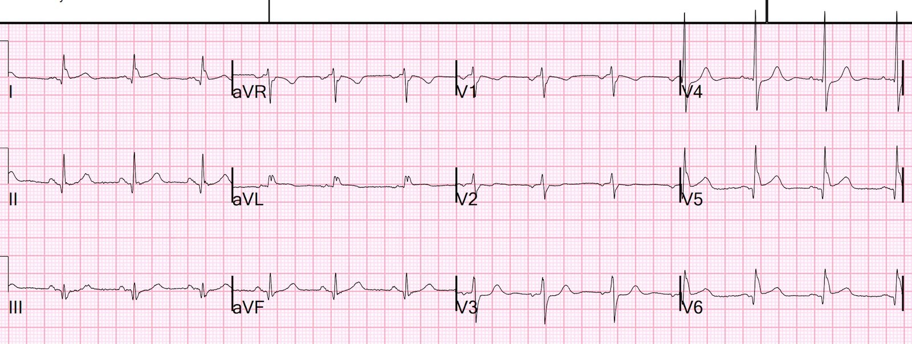
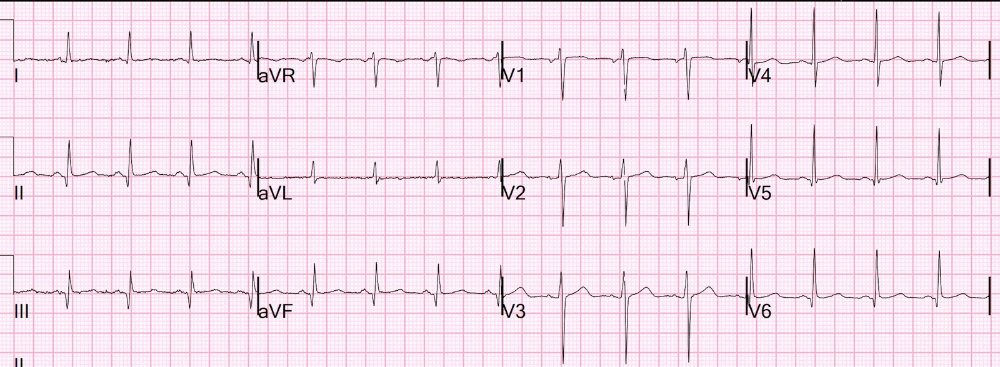
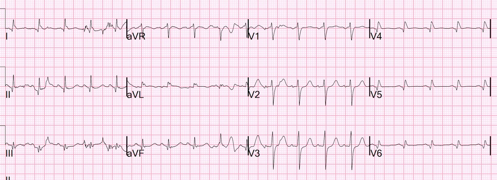
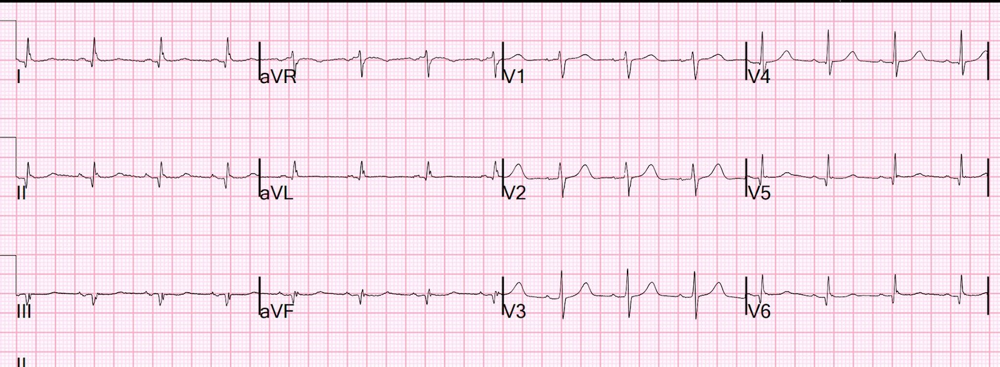
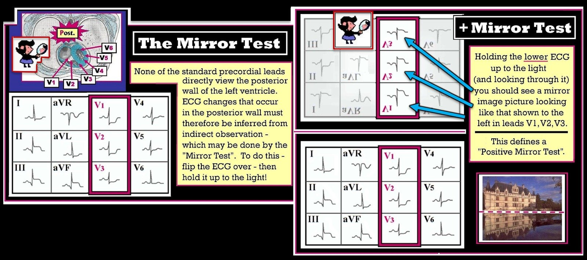
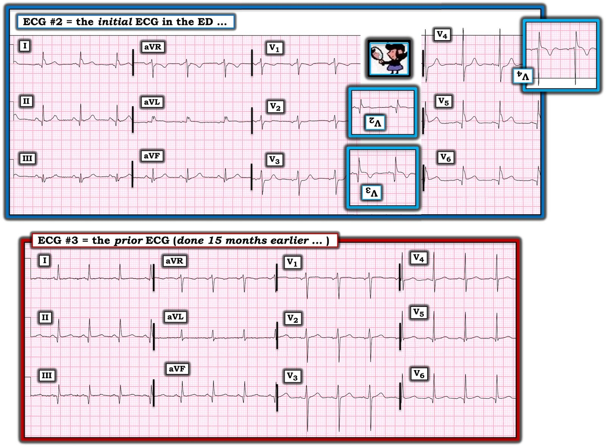

21/09/2022 — Các chuyển đạo phía sau có thể mang lại sự yên tâm sai lầm
Bản dịch tiếng Việt của bài "Posterior leads can give false reassurance" – Dr. Smith’s ECG Blog. Giữ nguyên toàn bộ 7 hình ảnh của bản gốc.
Một phụ nữ 40 mấy tuổi, có đái tháo đường và bệnh mạch máu ngoại biên, thường xuyên phải đến khoa cấp cứu vì đau mạn tính, đã gọi 911 vì đau ngực dữ dội đột ngột. Bệnh nhân rất kích động và không thể nằm yên.
Tôi ra đón nhân viên cấp cứu ngoài viện ở cửa để xem điện tâm đồ trước viện.
Đây là bản ghi đó:


Bản ghi này không bình thường, nhưng không có bằng chứng đặc hiệu nào của nhồi máu cơ tim do tắc (OMI).
- Có một số sóng Q ở các chuyển đạo dưới và bên (không rõ có từ bao giờ) và có một chút “biến dạng phần cuối QRS” (terminal QRS distortion) ở các chuyển đạo dưới và V4-V6, nhưng dấu hiệu này có thể gặp bình thường ở các chuyển đạo này (nó KHÔNG bình thường ở chuyển đạo V2/V3 khi có ST chênh lên biến thể bình thường ở V2-V4).
Bệnh nhân khá kích động và cần dùng thuốc an thần.
Vì vậy, rất khó ghi được điện tâm đồ tại khoa cấp cứu, nhưng cuối cùng cũng ghi được:


— Bạn nghĩ gì? —
= = =
Có ST chênh xuống MỚI rất kín đáo ở V3 và V4, và ST chênh lên mới kín đáo ở V5 và V6.
Có sẵn một điện tâm đồ cũ từ 15 tháng trước:


Điện tâm đồ cũ này không có ST chênh lên (STE) và không có ST chênh xuống (STD). Thực tế, như ở hầu hết bệnh nhân, có một chút STE bình thường ở V3 và V4. Điện tâm đồ lúc nhập viện có một chút STD ở V3 và V4.
- Đây là dấu hiệu chẩn đoán nhồi máu cơ tim do tắc (OMI).
= = =
Tôi chẩn đoán nhồi máu cơ tim do tắc (OMI) và kích hoạt phòng thông tim (cath lab).
= = =
Trước khi đi thông tim, chúng tôi đã ghi một điện tâm đồ với các chuyển đạo phía sau:


Các chuyển đạo V4-V6 đã được dời ra thành ngực phía sau. Vì thế, chúng có điện thế thấp hơn nhiều. Các chuyển đạo V4-V6 hoàn toàn KHÔNG có ST chênh lên. Tuy nhiên, bạn có thể thấy V3 vẫn còn ST chênh xuống.
Điều này có nghĩa là ST chênh xuống ở V3 phản ánh thiếu máu cục bộ dưới nội tâm mạc vùng “trước”, chứ không phải OMI thành sau?
- Đó là điều mà nhiều người muốn bạn tin.
- Điều này KHÔNG hề làm tôi nao núng chút nào!
Liệu ST chênh xuống ở V3 có chẩn đoán OMI thành sau tốt hơn các chuyển đạo phía sau không? Quả thực có thể là vậy.
Bệnh nhân được đưa vào phòng thông tim và có tắc 100% nhánh bờ tù (cấp máu cho thành bên và thành sau) với dòng chảy TIMI-0.
- Troponin-I độ nhạy cao (Abbott Architect: giới hạn trên tham chiếu (URL) = 16 ng/L ở nữ, 34 ở nam):
- Ban đầu: 26 ng/L
- Đỉnh: lớn hơn 50.000 ng/L ==> Một OMI cấp diện rất rộng.
= = =
- Siêu âm tim:
- Phân suất tống máu thất trái ước tính là 34%.
- Rối loạn vận động thành khu trú - thành bên, vô động.
- Rối loạn vận động thành khu trú - đáy thành dưới (đây chính là thành sau).
- Hình ảnh này phù hợp nhất với thiếu máu cục bộ/nhồi máu ở vùng phân bố của động mạch mũ trái.
= = =
Điện tâm đồ ngày hôm sau:


Sóng T ở V2, V3 lớn hơn so với lúc nền. Điều này có thể do “sóng T tái tưới máu thành sau”, cũng có thể không. Nếu đúng là vậy, thông thường tôi sẽ mong đợi thấy cả sóng T đảo ngược do tái tưới máu ở V5 và V6.
= = =
Những điểm cần học:
1. Chúng tôi đã chứng minh rằng BẤT KỲ ST chênh xuống nào tối đa ở V1-V4 đều có độ đặc hiệu 96% đối với OMI thành sau.
- Meyers, Bracey, Smith và cs. Tạp chí của Hội Tim mạch Hoa Kỳ (Journal of the American Heart Association). Ischemic ST depression maximal in V1-V4 (vs. V5-V6) of any amplitude, is specific for Occlusion Myocardial Infarction (vs. non-occlusive ischemia)
2. Các chuyển đạo phía sau là không cần thiết trong tình huống này, và dù chúng có thể hữu ích — vẫn có nguy cơ chúng khiến bạn từ bỏ chẩn đoán chính xác là OMI thành sau.
3. Một OMI không phải là STEMI có thể rất kín đáo và khó chẩn đoán, dù các dấu hiệu lại rất đặc hiệu.
4. Trong nhiều ca như vậy, không phải điện tâm đồ thiếu đặc hiệu; mà chính người đọc mới thiếu đặc hiệu.
= = =
==================================
BÌNH LUẬN CỦA TÔI, bởi KEN GRAUER, MD (21/9/2022 — Cập nhật cho WordPress ngày 18/6/2026):
Tôi rất thích những ca ủng hộ niềm tin của mình — đó là lý do tôi nóng lòng viết bình luận cho bài đăng gần đây nhất này của Bác sĩ Smith. Thông điệp mà Bác sĩ Smith truyền tải rất đơn giản: — Các chuyển đạo phía sau đôi khi mang lại sự yên tâm sai lầm. Như đã xảy ra ở ca hôm nay — có những lúc dù OMI thành sau đã được nhận ra chắc chắn bằng những cách khác — vẫn không thấy chút ST chênh lên nào ở các chuyển đạo phía sau.
- Việc các chuyển đạo phía sau không phải lúc nào cũng cho thấy ST chênh lên khi có OMI thành sau kín đáo — không có gì đáng ngạc nhiên. Đó là vì khi đặt các chuyển đạo V7, V8 và V9 ở phía sau, các chuyển đạo này nằm ở vị trí mà hoạt động điện phải đi qua lớp cơ dày ở lưng trước khi được ghi lên điện tâm đồ. Kết quả là — ngay cả trong điều kiện tối ưu, biên độ QRST (và do đó mức độ chênh lên của ST-T) ở các chuyển đạo phía sau thường khiêm tốn.
Để giúp nhận ra ngay lập tức OMI thành sau — tôi ưa dùng nghiệm pháp “soi gương” (Mirror Test), mà tôi phổ biến lần đầu cách đây hơn 4 thập kỷ (khoảng năm 1983, trong ấn phẩm thứ 1 về điện tâm đồ của tôi).
- Trong những năm kể từ khi tôi lần đầu đề xuất công cụ trực quan này — tôi đã dùng nó để nhận ra hàng trăm ca nhồi máu thành sau chỉ trong vòng vài giây — và không cần trì hoãn xử trí (hay việc vận chuyển bệnh nhân) để ghi thêm các chuyển đạo (tức là, phía sau). Điện tâm đồ 12 chuyển đạo chuẩn là tất cả những gì cần có.
= = =
Nghiệm pháp “soi gương” là gì?
Nghiệm pháp “soi gương” không gì khác hơn là một công cụ trực quan giúp dễ nhận ra hình dạng bất thường của ST chênh xuống thấy ở một hoặc nhiều chuyển đạo trước, đi kèm nhồi máu thành sau cấp.
- Hình 1 — cho thấy cơ sở lý luận của nghiệm pháp soi gương (tức là, các chuyển đạo trước cung cấp hình soi gương của hoạt động điện ở thành sau). Chỉ cần lật ngược một điện tâm đồ 12 chuyển đạo chuẩn, rồi giơ nó lên trước ánh sáng — bạn có thể dễ dàng hình dung “hình soi gương” của các chuyển đạo từ V1 đến V4.
- Với một chút luyện tập — sẽ trở nên DỄ DÀNG nhận ra hình dạng “bậc thềm” (phẳng) của ST chênh xuống — trông giống một STEMI khi hình ảnh này được lật ngược.
- Nhồi máu thành sau thường (dù không phải luôn luôn) làm tăng biên độ sóng R ở các chuyển đạo trước. Sóng R ở các chuyển đạo trước càng cao — thì khi lật ngược hình ảnh, chúng trông càng giống một sóng Q sâu dần.
- Điểm MẤU CHỐT: Nếu thay vì thấy ST chênh xuống lan tỏa với mức độ tương đương ở các chuyển đạo ngực (và chi) — bạn thấy ST chênh xuống tối đa ở các chuyển đạo V2, V3 và/hoặc V4 — hãy NGHĨ ĐẾN nhồi máu thành sau! Khi đó, lật ngược hình ảnh (tức là, áp dụng nghiệm pháp soi gương) giúp dễ nhận ra hình dạng ST-T chênh xuống đặc trưng chỉ điểm nhồi máu thành sau.
- LƯU Ý: Vì không phải đi xuyên qua lớp cơ lưng dày khi ghi điện tâm đồ chuẩn (như khi ghi các chuyển đạo phía sau) — biên độ tương đối của độ lệch đoạn ST-T có xu hướng lớn hơn đáng kể so với biên độ ST-T thấy ở các chuyển đạo phía sau. Đó là lý do tôi tin rằng nghiệm pháp soi gương ưu việt hơn việc dùng các chuyển đạo phía sau.
- Lưu ý của tác giả: Tôi không tin là mình từng gặp một ca nào mà nhồi máu thành sau được chẩn đoán bằng các chuyển đạo phía sau lại không thấy rõ khi áp dụng nghiệm pháp soi gương trên điện tâm đồ 12 chuyển đạo chuẩn. Nhưng như Bác sĩ Smith minh họa trong ca hôm nay — điều ngược lại thì không đúng (tức là, bệnh nhân hôm nay được chẩn đoán đúng trên điện tâm đồ là OMI thành sau dù hoàn toàn không có ST chênh lên ở các chuyển đạo phía sau).
= = =
Hình 1: Minh họa cơ sở lý luận của nghiệm pháp soi gương (Hình trích từ Grauer K: ECG-2014 Pocket Brain ePub).


= = =
Áp dụng nghiệm pháp soi gương cho ca hôm nay:
Để minh họa cách tôi dùng nghiệm pháp soi gương trong ca hôm nay — tôi đã đưa lại trong Hình 2 điện tâm đồ đầu tiên ghi tại khoa cấp cứu (là điện tâm đồ thứ 2 mà Bác sĩ Smith trình bày ở trên) — và một bản ghi nền trước đây của bệnh nhân này (là điện tâm đồ thứ 3 trình bày ở trên).
- LƯU Ý: Các sóng Q khá lớn thấy ở các chuyển đạo dưới-bên trong điện tâm đồ #2 không phải là mới! Thay vào đó — các sóng Q tương tự đã có trên điện tâm đồ nền trước đây, gợi ý bệnh nhân này đã từng bị nhồi máu trước đó.
- Điều thực sự mới — là ST chênh lên thành bên, rõ rệt ở các chuyển đạo ngực bên V5,V6 — và kín đáo nhưng có thật ở các chuyển đạo bên cao I và aVL. ST chênh lên thành bên này không có trên bản ghi trước đó.
- Điều cũng mới — là ST chênh xuống “dạng bậc thềm” kín đáo nhưng có thật , tối đa ở các chuyển đạo V3 và V4 (và thấp thoáng ở chuyển đạo V2).
= = =
CÂU HỎI: Chẳng phải DỄ HƠN sao khi nhìn hình soi gương (lật ngược) của các chuyển đạo V2,V3,V4 để nhận ra rằng hình dạng ST chênh xuống ở các chuyển đạo trước như thế này, ở bệnh nhân đau ngực mới khởi phát, là chẩn đoán OMI thành sau cấp (tức là, đây là một nghiệm pháp soi gương dương tính).
- Xin nhấn mạnh — So sánh điện tâm đồ #2 với bản ghi nền trước đây khẳng định rằng ST chênh xuống ở điện tâm đồ #2 rõ ràng là mới! Nhưng trước khi nhìn bản ghi cũ — tôi đã biết từ nghiệm pháp soi gương dương tính rằng hình dạng bậc thềm (dẹt) của các đoạn ST chênh xuống ở chuyển đạo V3 và V4 rõ ràng là bất thường — và chỉ điểm OMI thành sau cấp cho đến khi chứng minh được điều ngược lại.
- Mặc dù thay đổi ST-T ở chuyển đạo V2 kín đáo hơn nhiều so với những gì thấy ở V3 và V4 — xét rằng sóng T thường dương ở V2 và đoạn ST thường hơi chênh lên ở chuyển đạo này như một dấu hiệu bình thường — tôi biết rằng ở một bệnh nhân có đau ngực mới, hình dạng ST-T ở chuyển đạo V2 là không bình thường.
- Tổng hợp lại tất cả — Như đã nói, các sóng Q thành dưới (và nhồi máu thành dưới) ở điện tâm đồ #2 là cũ. Nhưng sự kết hợp của ST chênh lên ở các chuyển đạo bên + nghiệm pháp soi gương dương tính ở V2,V3,V4 — chỉ điểm OMI sau-bên cấp, điều này gợi ý mạnh rằng động mạch “thủ phạm” là một nhánh của LCx (Left Circumflex — động mạch mũ trái). Điều này đã được xác nhận khi thông tim.
= = =
Hình 2: So sánh trong ca hôm nay giữa điện tâm đồ đầu tiên tại khoa cấp cứu ( = điện tâm đồ #2) — với một bản ghi nền trước đây ( = điện tâm đồ #3) của bệnh nhân này, ghi 15 tháng trước đó.
- Hình lật ngược (hình soi gương) của các chuyển đạo V2,V3,V4 ở điện tâm đồ #2 tạo thành một nghiệm pháp soi gương dương tính — mà ở bệnh nhân đau ngực dữ dội, mới khởi phát này — là chẩn đoán OMI thành sau cấp.


Một số LINK chọn lọc để tìm hiểu thêm về nghiệm pháp soi gương:
- ECG Blog #246 — Ôn lại khái niệm “nghiệm pháp soi gương” kèm một ví dụ lâm sàng.
- Bài viết ngày 10 tháng Hai năm 2022 trên Dr. Smith’s ECG Blog. Bình luận của tôi (ở cuối trang) minh họa nghiệm pháp soi gương trong một ca có sóng tái tưới máu thành sau (tức là, sóng T cao ở các chuyển đạo trước).
Các bài viết sau đây trên Dr. Smith’s ECG Blog cung cấp thêm ví dụ trong phần Bình luận của tôi (ở cuối trang) minh họa việc áp dụng nghiệm pháp soi gương để chẩn đoán nhồi máu cơ tim thành sau cấp.
- Bài viết ngày 21 tháng Ba năm 2023 —
- Bài viết ngày 23 tháng Một năm 2023 —
- Bài viết ngày 16 tháng Bảy năm 2022 —
- Bài viết ngày 3 tháng Năm năm 2022 —
- Bài viết ngày 3 tháng Một năm 2022 —
- Bài viết ngày 11 tháng Mười năm 2020 trên
- Bài viết ngày 28 tháng Chín năm 2020 trên
- Bài viết ngày 21 tháng Chín năm 2020 —
- Bài viết ngày 16 tháng Hai năm 2019 —
Còn nhiều ví dụ khác về OMI thành sau với nghiệm pháp soi gương dương tính rải rác khắp Dr. Smith’s ECG Blog …
= = =
= = =